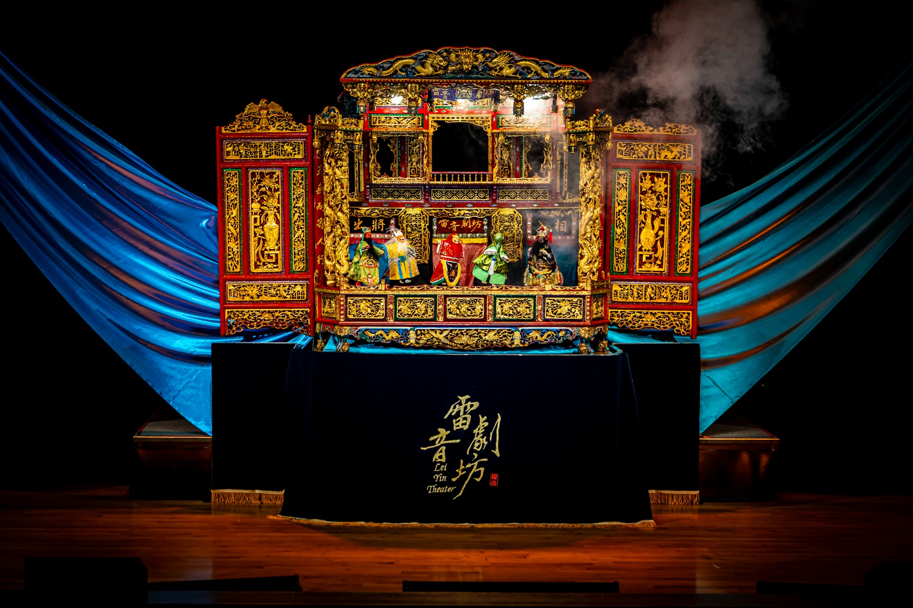
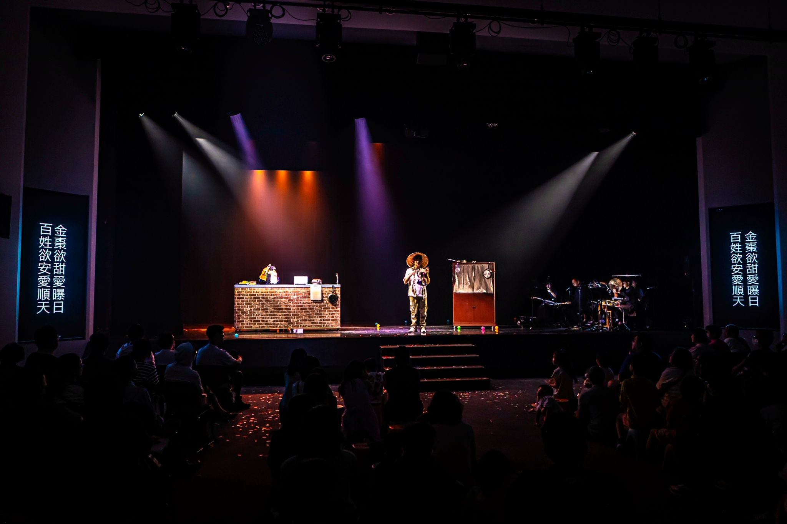
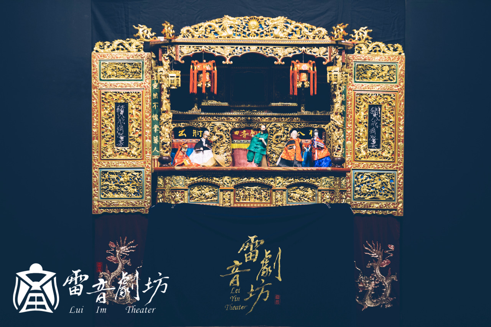
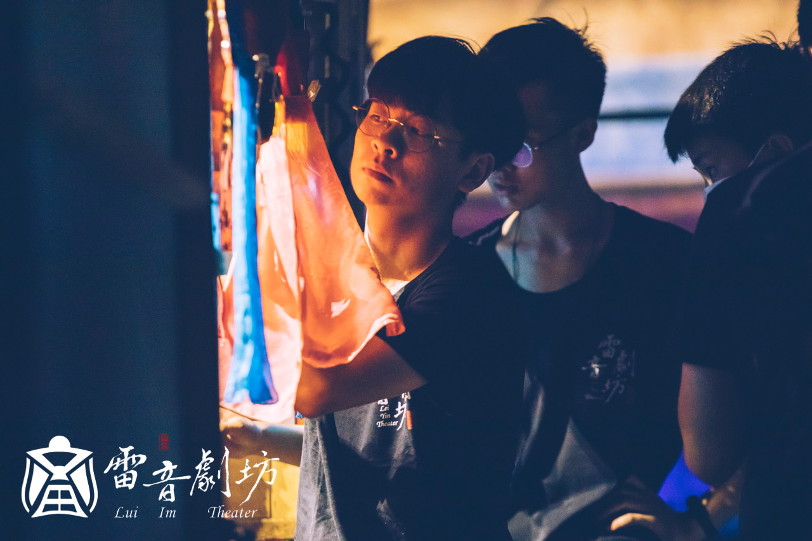
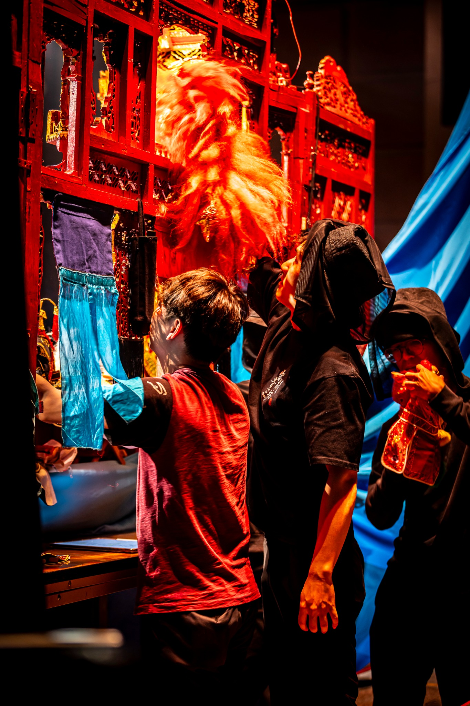

Productions
作品庫
從臺灣地方故事、童謠與民間傳說出發，讓掌中戲、臺語、歌仔調與當代舞臺持續長出新的觀看方式。

2025–2026 · 歌仔調布袋戲
《青瞑的龍蛇無青瞑》
以臺南青瞑龍、青瞑蛇傳說為起點，讓地方水文、信仰與兒童觀眾在掌中戲裡重新相遇。
查看作品 →
2026 · 兒童布袋戲 × 人偶共演
《龜山夫人氣甲衝煙矣！》
從宜蘭地景與地方傳說出發，以真人、戲偶、物件與觀眾互動重新思考人與自然的關係。
查看作品 →2025 · 歌仔調布袋戲
《瘋狂騎士闖戲棚》
改編《唐吉訶德》中的木偶戲段落，以歌仔調布袋戲、歌唱與戲中戲碰撞傳統與當代。
查看作品 →
2025 · 親子布袋戲
《西北雨傳奇》
以臺灣童謠《西北雨》與迎親故事為創作脈絡，在親子劇場中帶入臺語、地方俗語與互動。
查看作品 →
2025 · 西北雨奇緣前傳
《鮕鮐兄點姻緣》
從一把誤偷的傳家大刀開始，牽起鯽仔魚與蘭花的姻緣線，展開一場小人物的喜劇冒險。
查看作品 →
2024 · 歌仔調布袋戲 × 人偶共演
《閻羅石磨心》
從冤魂在地府受審展開，透過多重敘事與人偶同台，追問一桿秤如何衡量執著與是非。
查看作品 →2022–2024 · 歌仔調布袋戲
《鯽仔魚娶親》
取材臺灣童謠與地方民間趣味，描寫鯽仔魚迎親一路遭遇西北雨、渡溪與阻攔的冒險。
查看作品 →